一、 spring-data-jpa
1. src
1.1 overview
1.1.1 Spring Data是spring-based的持久层框架，下面有10多个子项目，包括hbase、redis。在跟DB的交互中，Spring Data JPA算是除了Mybatis外最常用的了，很适合EE的开发场景。
1.2 concept
1.2.1 Spring Data JPA： 实现了JPA规范的基于Spring的orm、持久层框架。使得开发人员可以基于 JPA 的标准对数据进行操作同时提供了自动生成实现类的功能，简化操作持久层的代码，只需要编写接口就可以。
2. 搭建
2.1 maven
2.1.1 创建项目
2.1.2 配置依赖，修改配文
{1} 加入jpa的namespace和xsd
{2} 底层依赖HJPA
[1] 所以要将传统的sessionFactory换成entityManagerFactory，并且在entityManagerFactory中配置实体类扫描(扫描实体类中的orm注解)。
[2] 上面扫的仅仅是实体类的注解，还要在外面<beans>下扫描spring的注解，比如@Repositroy@Service
{3} 扫描接口，功能类似于MB的mapperScanner，用来扫描dao包然后给接口创建代理类。
2.1.3 创建接口，只写接口不写实现类，只需要继承data提供的接口且会有默认的方法
{1} data提供的方法的方法名没有遵循jpa标准，但里面封装了jpa的方法
[1] c 用的是save
2.2 sboot
2.2.1 pom依赖
{1} jpa的启动器
<dependency> <groupId>org.springframework.boot</groupId> <artifactId>spring-boot-starter-data-jpa</artifactId> </dependency> |
{2} thymeleaf、mysql驱动、druid连接池、web启动器、test启动器
2.2.2 application.properties
{1} properties
spring.datasource.driverClassName=com.mysql.jdbc.Driver |
{2} yml
server: |
{3} ddl-auto
[1] create：每次运行程序时，都会重新创建表，故而数据会丢失
[2] create-drop：每次运行程序时会先创建表结构，然后待程序结束时清空表
[3] upadte：每次运行程序，没有表时会创建表，如果对象发生改变会更新表结构，原有数据不会清空，只会更新（推荐使用）
[4] validate：运行程序会校验数据与数据库的字段类型是否相同，字段不同会报错
[5] none: 禁用DDL处理
3. ORM
3.1 实体类
@Entity |
3.1.1 @Entity @Table(name = "student")
3.1.2 @Id必须
3.1.3 @column
{1} 如果属性名和列名不同，要用column修正
关联查询：关联关系的建立
3.2 oto
3.2.1 一对一按单双向、主外键关联有4种
3.2.2 在entity中通过注解建立双向主键一对一映射关系
{1} 在双方类中建立关联属性，可以不建外键属性，只建关联的引用属性。
{2} 在维护方@OneToOne + @JoinColumn(name=’外键名’)
{3} 在被维护方 @OneToOne(mapedBy=”维护方关联属性名”)
{4} 一对一的维护方和被维护方由业务决定
{5} 关联属性上不需要再加@Column
3.2.3 usage
{1} 配置关联关系
被维护方 | @Entity |
维护方 | @Entity |
[1] 级联操作：
(1) 在维护放种的@ OneToOne中设置Cascade枚举属性 .PERSIST表示添加的时候级联添加
3.3 otm
3.3.1 多对一中，一般由多方维护。只能由多方级联添加一方，反向添加不可。
3.3.2 hibernate中建立关联关系分2步
{1} 设置关联属性
{2} 在关联属性上通过注解来建立映射关系，这个映射关系包括：
[1] 关联关系的类型
(1) 多方：@MTO 一方：@OTM
[2] 维护方/非维护方 ： mappedBy。多对一中，维护方只能是多方，只有@OTM才有mappedBy属性
[3] 在维护方设置级联操作范围
[4] 单向/双向
[5] 外键的名字 ： @JoinColumn(name=”外键的列名”) hibernate要在多方的表中增加一列的列名，joinColumn的意思就是增加列
3.3.3 usage
{1} 创建类，创建关联属性，正向工程
{2} 设置对象间关联。
{3} 对维护方执行操作
[1] 非维护方执行操作不可级联操作到维护方，结果只会affect到非维护方，维护方无变化且不会报错。
3.4 mtm
3.4.1 配置
3.4.2 coding
{1} 创建对象
{2} 建立关系
{3} 执行
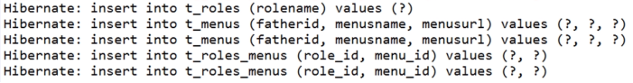
[1] 执行顺序先插入双方再插入中间表
{4} 查询
[1] 查询默认用的是n + 1的方式，也就是说要执行多条sql，而如H默认使用懒加载方式，执行完第一条就会关闭session，所以需要在维护方的@MTM中加入fetch=ERGER
3.5 hibernate配置关联关系总结
3.5.1 每种关联关系都会有维护方
| @Entity @Table @Column @Id @GeneratedValue(strategy=GenerationType.IDENTITY) |
|
OTO | @OneToOne
| OTO的维护方也需要增加一个外键列 |
OTM | @MTO 维护方必须是多方，在维护方设置级联操作范围 @JoinColumn(name=”外键的列名”)是多方表中的代表一方的外键 @OTM mappedBy的值是多方实体类中的代表一方的属性 | ，只有@OTM才有mappedBy属性 |
MTM | 维护方： @MTM 如果开启级联操作，要在维护方开(cascade=CascaseType.PERSIST) hibernate默认延迟加载 多对多关联查询时，多执行多条sql语句，还没执行完session就关闭了。可以配置长session，或者在维护方@MTM中配置fetch=FetchType.EAGER @JoinTable(name="t_roles_menus", 非维护方： @ManyToMany(mappedBy="menus") | inverseJoinColumns是维护方的列名，joinColumns是中间表对应的列名。不需要设置非维护方的列名。 |
3.5.2 web容器启动时，会自动先去创建相关的表和外键，而多对一外键关联中，多方的外键必须和参考表的主键类型长度一致，否则会报错
{1} 数据库是不可能出现2个相同的表，表明一定有地方不同
4. 运行原理 -------- 为什么只继承接口即可，不需写实现
4.1 继承结构
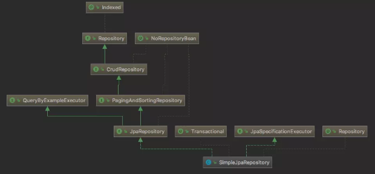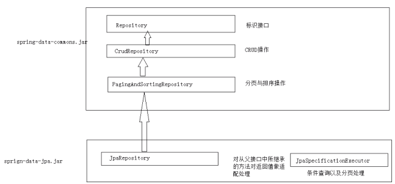
4.2 Repository接口
4.2.1 是 Spring Data JPA提供的所有接口中的顶层接口，是空接口、标记接口。
{1} 标记什么？会根据自定义的子接口中的方法的方法名自动在代理对象中创建对应方法
{2} 基于特定规范的方法名查询
[1] 规则： findBy(关键字) + 属性名称(属性名称的首字母大写) + 查询条件(比较规则)(首字母大写)
(1) 命名规范不是驼峰规则，而仅仅是首字母，比如username，要设置为Username
(2) 查询条件指的是就是比较规则，比如大于、相等
(3) 相等 ： 什么都不写、默认，Is，Equal
(4) 多条件：And
[2] 返回值类型就是方法的返回值类型
关键字 | 方法命名 | sql where 字句 |
And | findByNameAndPwd | where name= ? and pwd =? |
Or | findByNameOrSex | where name= ? or sex=? |
Is,Equal,默认 | findById,findByIdEquals,findById | where id= ? |
Between | findByIdBetween | where id between ? and ? |
LessThan | findByIdLessThan | where id < ? |
LessThanEqual | findByIdLessThanEquals | where id <= ? |
GreaterThan | findByIdGreaterThan | where id > ? |
GreaterThanEqual | findByIdGreaterThanEquals | where id > = ? |
After | findByIdAfter | where id > ? |
Before | findByIdBefore | where id < ? |
IsNull | findByNameIsNull | where name is null |
isNotNull,NotNull | findByNameNotNull | where name is not null |
Like | findByNameLike | where name like ? |
NotLike | findByNameNotLike | where name not like ? |
StartingWith | findByNameStartingWith | where name like '?%' |
EndingWith | findByNameEndingWith | where name like '%?' |
Containing | findByNameContaining | where name like '%?%' |
OrderBy | findByIdOrderByXDesc | where id=? order by x desc |
Not | findByNameNot | where name <> ? |
In | findByIdIn(Collection<?> c) | where id in (?) |
NotIn | findByIdNotIn(Collection<?> c) | where id not in (?) |
True | findByAaaTue | where aaa = true |
False | findByAaaFalse | where aaa = false |
IgnoreCase | findByNameIgnoreCase | where UPPER(name)=UPPER(?) |
[3] 缺点
(1) 如果条件多，会导致方法名很长
[4] summary
(1) 声明式dao实现类编写，通过设置方法名的规范来为springDataJpa自动生成的代理类中生成的方法提供信息
{3} 基于@Query 注解查询
2种方式
//方法名称命名规则 |
[1] JPQL
(1) Hibernate 的 HQL 演变过来的。和 HQL 语法及其相似
[2] sql
(1) nativeQuery必须设为true，默认false。
(2) 这个属性的意思就是是否进行HQL转SQL，如果为true，不转，直接执行，false，按HQL转SQL先转了再执行。
[3] 如果是更新，要加@Modifying注解
[4] DataJPA中，cud必须添加到事务中 = 必须使用@Transcational，如果在spring-test测试类中，还要加@Rollback(false)
[5] summary
(1) 通过@Query中的value和nativeQuery属性来设置HQL或SQL，参数同方法的参数列表关联
(2) @Modfying
(3) 即使是Query也要加@Transactional，有专门的查询事务
4.3 CrudRepository
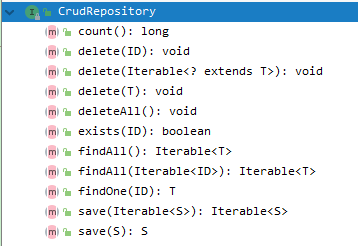
4.3.1 提供了CRUD的方法，SimpleJPARepository里的save就是对CrudRepositroy的实现，save既可以C也可以U，CrudRepository的代理对象也代理了SimpleJPARepository，CUD时自动提交事务，不需要像Repositroy接口中的抽象方法那些设置@Transcational
{1} 每种类型方法都有多个重载，比如save，可以单个或批量保存
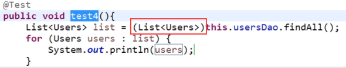
Crud的findAll()返回的是Iterable类型，需要强转，JpaRepository返回的是List类型
{2} 几乎所有集合都实现了Iterable接口
{3} delete 先查后删
[1] 为什么先查后删
(1) 为了更符合orm，任何操作都要通过对象，直接删肯定是根据id去删，不优雅，orm的任何操作一般都是通过对象。但也可以直接通过hql和sql删，但这样就不是面向对象操作了。
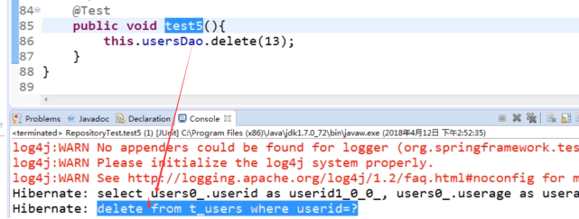
{4} update
[1] 没有专门的update方法，save会根据主键判断是插入还是更新。
[2] 将对象查出之后直接修改属性(通过set方法)，不用调用save也会触发更新，因为查出的对象在内存中处于持久态。
(1) 需要加@Transcational和@Rollback(false)，因为没有调方法，也就不可能使用在调用的方法上的事务(意味着当前语句执行时事务根本就没开启)，只能指望当前方法中的事务开启。
4.4 PagingAndSortingRepository
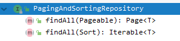
4.4.1 默认只能在所有记录中设置分页和排序。findAll==》如何设置过滤条件
{1} 使用JapSpecificationExecutor
{2} 自己写实现类，不能用SimpleJpaRepository的实现了
4.4.2 参数为Pageable对象和Sort对象
{1} Pageable
[1] data.domain包下

[2] 一般用PageRequest.of(0, 5, Sort.by("sclass"))构建，就是个封装了分页关键属性的对象。比如index，size
[3] 分页有3个基础属性，2个额外属性。index和size一般都是前台用户设置，总记录数要由后台返回。一般封装在一个DTO中。而spring提供了这个DTO，就是Page<T>，用来封装分页条件。findAll的条件就是Specification和Pageable，Pageable里面可以封装Sort，返回的就是Page<T>，是个VO，用来给前端页面提供动态数据。
[4] 可以通过getTotalElements()，getTotalPages()来获取总记录数，总页数。
@SpringBootTest |
{2} Sort
[1] 使用静态方法构建，也可以使用public的构造器
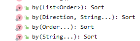
public Sort(Direction direction, List<String> properties) |
public Sort(Order... orders) { |
[2] Direction 是排序规则的封装的枚举类，提供了ASC，DESC等常量
[3] Order： Sort的静态内部类，可以方便的获取Sort的属性。
(1) public Order(Direction direction, String property) 一个Order就可以封装一个排序属性和规则。
4.5 JpaRepository
4.5.1 位于data-jpa包下，而PagingAndSortingRepository位于data-commons包下
@NoRepositoryBean |
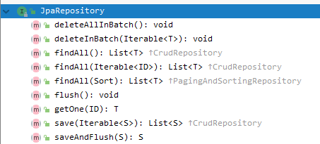
4.5.2 DataJpa的这几个接口定义时都设置了2个泛型，一个是给返回值设，一个是给参数设
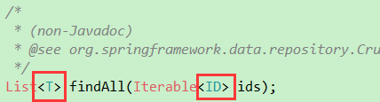
4.5.3 将其继承的所有结果的方法的返回值修改为易用的类型，做了适配处理 重写可以修改返回值，只要是被重写方法返回值的子类即可(网上很多都说错了，说成必须一致)。
{1} 重写：返回值、抛出异常小于被重写的，修饰符大于被重写的
4.6 JpaSpecificationExecutor
4.6.1 封装了多条件查询和分页排序，JPASpecificationExecutor 是单独存在。 完全独立。
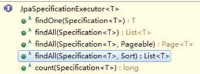
{1} Specafication
[1] 封装了查询条件，内部就一个抽象方法Predicate toPredicate()， 被实现类重写后将实现类传到findAll中，会自动获取方法返回值Predicate，拼接查询条件。
public interface Specification<T> { |
(1) 根据给定的条件为关联的entity的一个查询创建一个where子句。唯一方法的参数跟QBC一致。
(2) 查询条件就是 属性 规则 值
(3) Root封装属性
(4) CriteriaQuery封装规则和值
(5) CriteriaBuilder用来拼接，内部方法的返回值都是Predicate，难道这个方法只能有一个条件？当然不是，Predicate有拼接多个Predicate的方法，拼接后的返回值还是Predicate，因为需要设定多个查询条件之间的关系，比如and、or cb.and() Predicate and(Predicate... var1); 参数是可变参数 可以传入数组，不能传集合
{2} 必须跟其他接口一起被自定义接口继承才能使用
[1] 为什么？JSE没有继承任何接口，在基于JDK的动态代理机制中，无法创建目标对象为SJR的代理对象，因为没有JSE这个接口的class对象的getInterfaces为空，则创建自定义的代理对象(比如UserDao时)，自然不能创建实现类为SJR的代理对象。而如果跟其他接口一起被UserDao继承，就可以创建了。
4.6.2 usage
{1} 可通过创建Specification的匿名内部类来创建条件对象
{2} 多条件查询的操作
[1] 使用cd.and/or来拼接多个Predicate
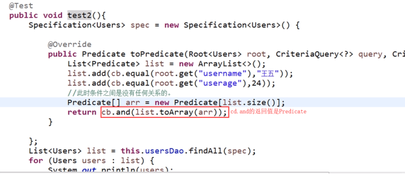
[2] 上面的方式需要创建集合，数组。可以直接利用可变参数的特性返回
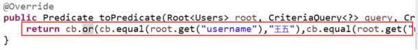
[3] 进行模糊查询时，root.get返回值为Path，自带转为String的方法
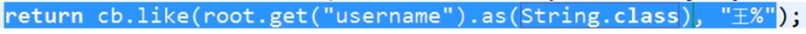
{3} 条件查询和分页
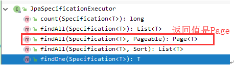。
[1] 如果即分页又排序又条件过滤？
(1) Pageable的构造方法中有个可以传Sort的，把Sort整合到了Pageable中，这样就保证findAll返回值是Page<T> ： VO/DTO
4.7 自定义Repository接口
4.7.1 如果官方提供的接口无法满足需求，可以自定义接口，然后创建自定义接口的实现类
{1} 为了保证还能同时使用官方提供的方法。 (UsersDao)要同时继承官方接口(JPARepository和自定义的接口)
4.7.2 usage
{1} 创建接口
public interface UsersRepository {
public Users findUserById(Integer userid);
}
{2} 使用接口
public interface UsersDao extends JpaRepository<Users, Integer>,JpaSpecificationExecutor<Users>,UsersRepository{ }
[1] 当然也可以直接用UsersRepository extends，但这样UsersRepository就不能复用了。
[2] 同 JpaSpecificationExecutor接口的使用一样，必须同时实现官方接口才行，所以需要一个适配接口来把自定义接口和官方接口结合起来 UsersDao接口
{3} 创建实现类
[1] UsersDao接口使用过将实现类命名为接口+Impl的形式来实现UsersDao接口
public class UsersDaoImpl implements UsersRepository {
@PersistenceContext(name="entityManagerFactory")
private EntityManager em;
@Override
public Users findUserById(Integer userid) {
System.out.println("MyRepository......");
return this.em.find(Users.class, userid);
}
}
{4} 调用
@RunWith(SpringJUnit4ClassRunner.class)
@ContextConfiguration("classpath:applicationContext.xml")
public class RepositoryTest {
@Autowired
private UsersDao usersDao;
/**
* 需求： 根据用户 ID 查询数据
*/
@Test
public void test1(){
Users users = this.usersDao.findUserById(5);
System.out.println(users);
}
}
4.8 代理对象
4.8.1 定义好接口，用的时候直接用@autoWired注入即可
4.8.2 打印dao接口的类型，可以看到对象是个代理对象且使用的是jdk的代理接口创建
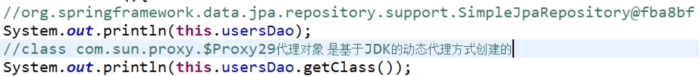
{1} 谁代理谁？
[1] userdDao对象代理UserDao，是接口的代理对象，userdDao对象是基于SimpleJpaRepository创建的。
[2] SimpleJpaRepository，就是data-jpa包下2个接口的实现类。SimpleJpaRepository把4个官方接口中的方法都进行了实现，底层使用jdk的动态代理方法创建
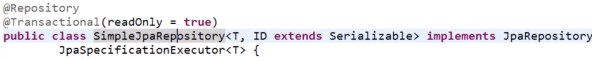
{2} 也可以手动创建代理类，创建指定接口的代理类
[1] 接口必须继承Repository或其子接口
[2] 创建的是参数(UsersDao)的代理类,SimpleJpaRepository作为第三方的增强体在invoke方法中注入。
@Autowired
private EntityManager em；
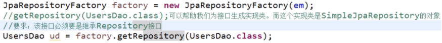
5. usage
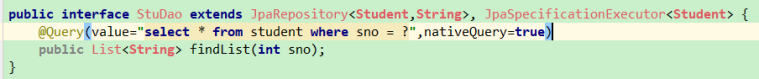
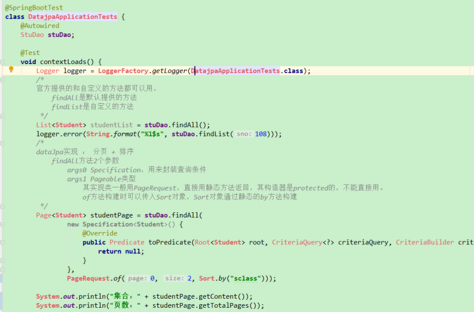
6. summary
6.1 note
6.1.1 一个数据库不能同时被2个项目连接，会报连接错误
6.2 一句话：
6.2.1 4个查询接口，一个条件接口。使用时需要自定义一个接口，让自定义接口继承一个方法接口 [ 和查询条件接口 ] ，如果默认提供的方法不够用，可以自定义方法
6.2.2 Repository仅是个标记接口，里面没有内容，用来告诉springdata，根据接口中的抽象方法给这个接口的实现类的代理对象添加普通方法。==》有时接口中只有3个方法，但实现类有10多个，这是正常的。